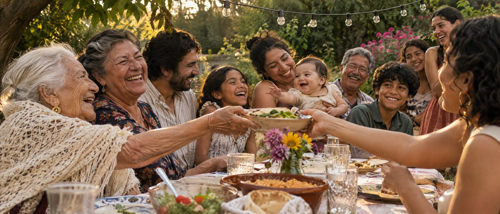

Good morning, Rosa.
Your tree has 9 people. Arthur's harbour story is ready to watch.
Your family tree
ArthurGrandpa
InesGrandma
 DanielFather
MartaMother
PPaulBrother
DanielFather
MartaMother
PPaulBrother
 RosaYou
SSamHusband
TheoSon
MiraDaughter
RosaYou
SSamHusband
TheoSon
MiraDaughter
DanielFather
MartaMother
PPaulBrother
RosaYou
SSamHusband
TheoSon
MiraDaughter
A letter instead of a face means no photograph yet.
Keep talking, Rosa.
Last time you were telling us about your father, Daniel, and the shop on Mill Street.
Next questionWhat was Marta's mother called?
Tap and answer out loud
Stories


Photos waiting



Preview with made-up people. Dearling is pre-launch. Back to the Dearling home page